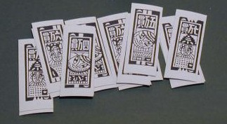
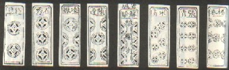
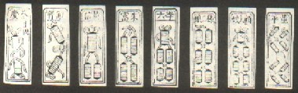

（１８）“ 子 ”の話
麻雀には順子・刻子など、“子”の字がついた用語がたくさんある。そんな“子”の字にまつわる用語の数々。
※言葉は移り変わりが激しい。そこで現在ではあまり使われていない表現もあれば、現代的な表現もある。そのあたりは適当に取捨選択した。また発音は、単なる目安。中国人の前で発音しても絶対に通じないので、そのつもりで。（笑）
＜牌種関係＞
萬子（まんヅ）＝数牌の１種


萬子（まんヅ＝ワンツ）は、「萬」という字が彫られているので萬子という。「萬」は正字であるが、略字の「万」が彫られている牌も多い。その牌は、「略万」と通称する。
もともと麻雀は金銭取引をゲームにしたもの。そして数牌の萬子は、金額を表している。

しかし福健省の麻雀牌は「一萬〜九萬」ではなく、「一品〜九品」となっている（九段階の位階を表している）。そこで福健省では、萬子ではなく品子（ピ ンツ）という。
筒子（トンツ）＝数牌の１種


筒子はもともと硬貨が彫られ、銭牌（チェンパイ＝ぜにハイ）であった（馬吊時代）。その時代は文子（ウェンツ）と呼ばれていた（日本で云う一文銭、二文銭の意）。
銭模様の紙牌 ※福州紙牌（梅林勲氏蔵） 
その紙牌（チーパイ）が骨牌（天九牌）と融合して麻雀が誕生する。その中で文子は天九牌のサイコロ目に変化した。それが麻雀の筒子である。したがって麻雀の筒子は、サイコロ目となっている（
彫りが硬貨からドット（点）になったので、文子（ウェンツ）も餅子（ピ ンツ）、筒子（トンツ）と呼称されるようになった。餅（ピン）は丸餅（まるもち）、筒（トン）は筒（つつ）っぽの意味である。ところがこれがごっちゃになり、日本では「筒子」と表記して「ピンヅ」と発音されている。ま、別に構わないけど。。。。
あと中国では、ドットを斑点に見立てて麻子（マーツ）などとも呼ばれた（「麻」は「斑点」の意。そこで斑点のある小鳥は麻雀（マーチャオ）＝すずめ）と呼ばれる）。麻子で一番大きいのは一筒、そこで一筒は「大麻子（ターマーツ）」とも呼ばれた。
また古式ゆかしく、ドットを星に見立て、は貫索星なんていう名称もある。（陽門星、ロン！ なんちて....）
あと筒子（トンツ）の当て字として、洞子（トンツ）・銅子（トンツ）・巻子（トンツ）なんて表記もある。
索子（ソーヅ）＝数牌の１種


索子は、硬貨＝穴あき銭を紐でく くった形。「索」は紐の意味だ。中国の古い紙牌を見ると、その状態がよく分かる。※福州紙牌（梅林勲氏蔵）
索子は彫りの形状から條子（チャオツ）、または条子（チャオツ）とも表記される。また日本では当て字で草子（ソーヅ）・竹子（ソーツ）とも表記されたこともあった。そうそう、
風子（フォンツ）＝風牌


見た通り風牌の意味。しかし一般的な名称ではない。日本では「四風子連打」などと使われるくらい。
翻子（ファンツ）＝

もちろん翻牌の意味。番子（ファンツ）とも表記される。
また大三元・大四喜・字一色の包牌となった字牌を包番子（パオファンツ）という。
張子（チャンツ）＝
牌種を問わず、「１枚の牌」の意。麻雀学上では単子(タンツ)とも云う。しかし張子＝単子は、孤立牌＝単独牌の意味ではない。
無子（ウーツ）＝手牌に無い牌
混子（ホンツ）＝いわゆるジョーカー牌
何牌としてでも使える。そこで別名を「百搭（パイター＝百の搭子）と云う。図柄はさまざまであるが、北支から中支にかけては花の図柄、南方系ではピエロ風味の図柄が多い。
搭子（ターツ）＝未完成順子
稲子（タォツ）と表記されることがある（稲のように育てということか？）。また架子（カーツ）とも云う。
辺搭子（ペンターツ）
嵌搭子（かんターツ）
順搭子（シュンターツ＝両面搭子）
順子（シュンツ）＝３連数牌
数字が順番になっているので順子という。抹子（モーツ）・就子（シューツ）・手子（ショーツ）などとも呼ばれる。刻子にならって、門前でできたものを暗順子（アンシュンツ）、チーでできたものを明順子（ミンシュンツ）と呼ぶこともある。
対子（トイツ）＝同一牌２枚
ツモでできたのが暗対子、ロンでできたのが明対子、なんちて....(_ _；
刻子（コーツ）＝同一牌３枚
ツモでできたのが暗刻子（アンコーツ）、ポン・ロンでできたのが明刻子（ミンコーツ）。
明刻子（上家より）
明刻子（対家より）
明刻子（下家より）
暗刻（あんこ）と引っかけて、むかし団子（だんご）なんて云ってたこともあったな。
暗子（アンツ）＝同一牌３枚使い
未槓子（みカンツ）＝同一牌４枚使い
一般に槓仔（カンこ）、あるいは４枚使いと呼ばれる。日本ではそう呼ばれるだけで何の役にもならないが、中国麻雀では四帰一（スークーイー）といって、一翻相当の役となる。
槓子（カンツ）＝同一牌４枚を槓したもの。
ツモでできたのが暗槓子（アンカンツ）
日本麻雀ではのように副露するが、中国麻雀では
明槓でできたのが明槓子（ミンカンツ）。
＃暗刻を明槓するのが大明槓、明刻を明槓するのが小明槓。
大明槓（上家より）
大明槓（対家より）
大明槓（下家より）
小明槓（上家より）
小明槓（対面より）
小明槓（下家より）
風槓子（ふうカンツ）＝風牌各１枚で槓仔とするもの。
北支、またはアメリカの特殊麻雀で行われている。中国・アメリカとも槓出せず、槓仔として手牌中で用いられる。アメリカ麻雀では手牌枚数との関連で、４枚のうち１種が雀頭となる。
中国麻雀では、風槓子がからむ役のとき、そもそも手牌全体がバラバラ状態であることが要件なので、雀頭そのものが必要ない。アメリカ・中国、いずれにしても他面子と組み合わせて手牌全体でひとつの役となる。
絶子（チェーツ）＝待ち牌が零牌（３枚切れ）の辺搭子・嵌搭子。
缺子（チェーツ）とも表記される。「缺」は“かける”とか“割れる”の意。日本では古くから「欠」が「缺」の代りに用いられている。そこで「欠子（チェーツ）」とも表記される。しかし中国では「缺」と「欠」は意味の異なる別の字。
将子（チャンツ）＝２５８の牌
北支麻雀には、乱将子（ランチャンツ）という役もある。
帯子（タイツ）＝一通と雀頭が同種牌である面子。
抱子（パオツ）＝一通と順子が同種牌である面子。

連子（レンツ）＝萬・筒・索の１セット
これが麻雀本来の組み合わせ。複牌化ののち、刻子（同種牌３枚）が成立するとともに消滅した。しかし現在でも中国北方麻雀の一部では、有効な組み合わせとされている。
門子（メンツ）＝搭子・順子の意（刻子の意味でも使われることがある）。
日本では面子が用いられている。門前の手牌を暗面子、副露したものを明面子と呼ぶこともある。
和子（ホーツ）＝アガリ面子
和門子（ホーメンツ）とも云う。
＜役関係＞
九子連還（チューツレンホァン）＝九連宝灯
凡例ではが４枚ある形しか認められなかった（
雲梯子（ウンテーツ）＝三色四連刻
雀頭まで連数牌、いわゆる五連刻になっているものは大雲梯（ターウンテー）。
＜点数関係＞
底子（テーツ）＝符底
拉子（ラーツ）＝満貫
昭和初期の第１期麻雀ブームの頃、「拉子（ラツー）を食わすぞっ」なんてフレーズが流行（はや）ったという。辣子（ラーツ）・坐子（ツォツ）・勒子（ローツ）とも云う。
＜用語関係＞
子家（ツーチャ）＝散家（子）
卓子（チャオツ）＝麻雀卓
荘子（チョワンツ）＝起家マーク
馬子（マーツ）＝点棒
点棒の中国名「籌馬（チョーマ）」から。
賽子（サイツ）＝サイコロ
采子（サイツ）・色子（サイツ）・骰子（サイツ）・骸子（ハイツ）・投子（トース）
五子包生（ウーツパオション）＝中国古典ルール
中国古典麻雀では海底牌ツモ者は打牌しなくても良かった。すると海底牌ツモ予定者の最後の打牌は、海底牌から数えて五枚目(五子)をツモったときとなる。そこでこの打牌が生牌で、それで放銃するとアガリ点は責任払い（１人払い）になるというルール（中国麻雀は、ツモ・ロンに関係なく３人払い)。
九子包生（チューツパオション）＝中国古典ルール
五子包生が発展的に厳しくなったルール。残り牌が９枚になった後、生牌を打って放銃した場合は放銃者の責任払い、というルール(中国麻雀では放銃でも３人払い)。
＜金銭関係＞
旺子（ワンツ）＝特別賭金
アガリ点に常に一定額を上乗せするのが長旺子（チャンワンツ）、特定の局に臨時に上乗せするのが短旺子（タンワンツ）、親落としの供託代が擡々旺子（タイタイワンツ＝子が親落としを宣言して供託。他家がアガれば没収される。成功すれば親から同額を取得する）。
賠子（ベイツ）＝罰金
回龍子（ホイロンツ）＝中国古典ルール
配牌が悪いとき、金銭を供託して洗牌からのやり直しを請求できた。この時の供託料を回龍子と称した。
※回龍（ホイロン）は、壁牌のこと。壁牌を、龍がとぐろを巻いている姿にたとえた。
＜イカサマ関係＞
鋸子党（チューツータン）＝イカサマ師
擡轎子（タイチャオツ）＝イカサマ
令子（リンツ）＝通しのイカサマ
言葉によるものを口令子(コーリンツ)、動作によるものを発令子（ファリンツ）という。
＜番外＞
葉子（イェーツ）＝中国ゲーム
古代の紙札ゲーム、葉子戯（イェーツーシー）の略称。
四君子（スーチンツー）＝四季花
四季を表す梅（メイ）蘭（ラン）菊（ツー）竹（チー）の四つの花の総称。花牌の図柄となっている。
電気椅子（でんきいす）＝日本麻雀ローカルルール
２万５千の３万返しであるが、ラス者のみ４万点返しとなる。中部電力（株）で採用されているという。
手拍子（てびょうし）＝表現
麻雀しながら、拍手すること（ウソ....）。反射的に切った牌が選択ミスだったときのこと。
亀の子＝牌ゲーム
山崩しゲームの１種（こちらをご参照下さい）。
＜超番外＞
椅子・帽子・緞子・綸子・裙子・淳子....